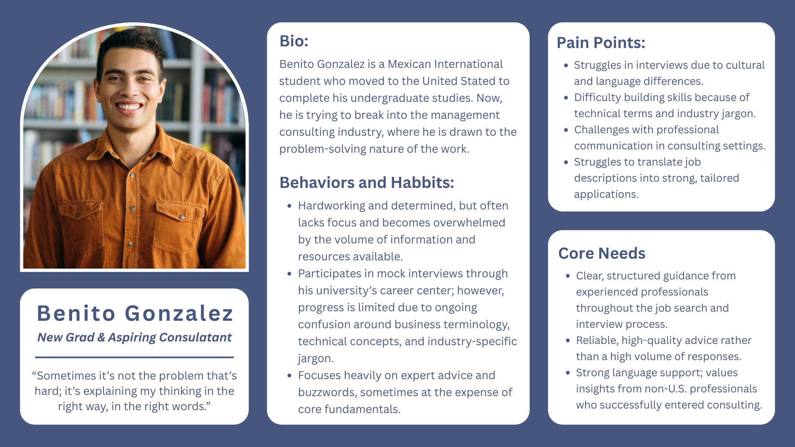
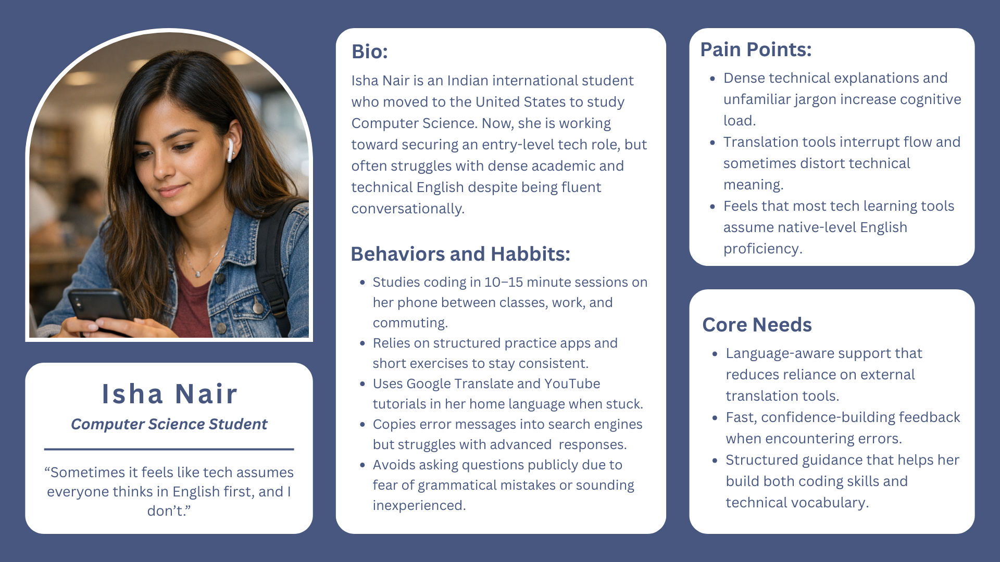
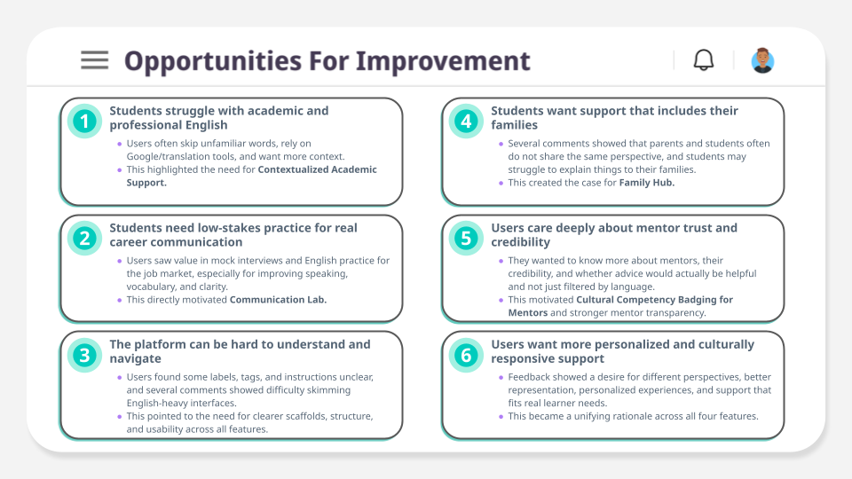
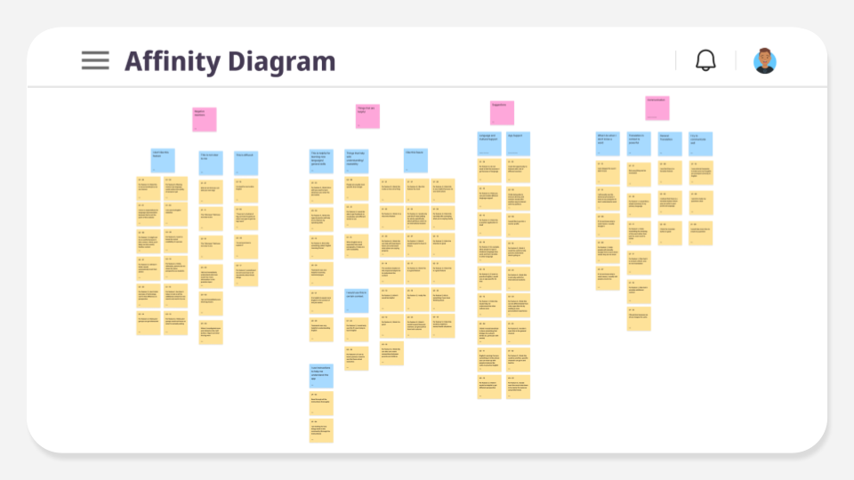
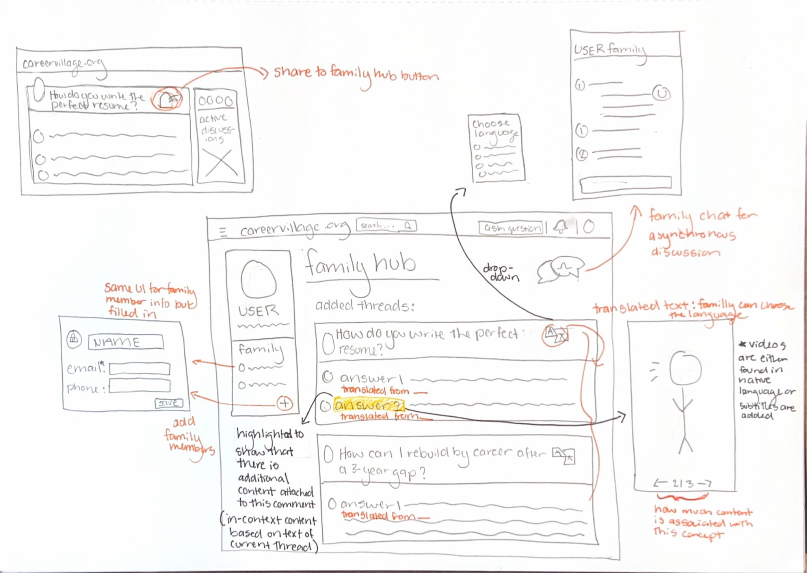

Background and Pain Points
The CareerVillage Redesign was a project that explored how we might redesign online educational technology to support students who speak more than one language, come from multilingual backgrounds, or who may not feel fully confident in academic or professional English. We were especially interested in how the app supports language representation and access to clear information.
User Personas


Opportunities for Improvement

UX Research
Affinity Diagram

Feature 3
The feature I developed was the Family Portal Hub. The Family Portal Hub is a feature that allows students to share career information with their parents in their native language. The idea is that it would explain U.S. career pathways in multiple languages, provide information, examples, and videos about different topics relating to the career goals of the student (such as college, internships, and certifications), and allow students to share career advice threads directly with family members in translated form.
Design Inpiration from Learning Science and Reading
Chapter 11 of Closing the Opportunity Gap emphasizes how many immigrant parents want to support their children but cannot provide meaningful assistance because they lack familiarity with the U.S. system or critical information is primarily communicated in English. This point is the driving force behind this feature. The Family Hub addresses this gap by providing a space where families can strengthen their involvement in the student’s learning and career growth. It allows parents to engage in discussions, understand advice shared on CareerVillage, and support decision-making in their own language. This also allows students to stop acting as translators for complex information, reducing their cognitive and emotional load.
There are also several learning science theories that support this feature and my design choices. Sociocultural Theory by Lev Vygotsky shows that learning is socially mediated and shaped by interaction with the more knowledgeable other. Thus, families can act as “scaffolds” in students’ career development when they understand the system. However, due to the aforementioned language barrier, it may be difficult for parents to use their knowledge and experience to help their student in the U.S. career system. Thus in the Family Hub, both the translated threads and the “more information” feature are designed to give parents’ and other family members access to furthering their understanding of the student’s career space. Translation bridges any language barriers to understanding the content of the threads, while the “more information” feature provides extra content in the form of multilingual and culturally relevant videos and explanations of U.S. pathways. This is to help parents’ connect their prior knowledge to these new spaces by activating it in the context of their own language and culture. There is also a “check your understanding” checklist at the end of each topic to support family members’ metacognition by helping them gauge their current understanding of a particular topic. Moreover, I have included chat and note-taking features in the Family Hub to allow for effortless discussion and exchange of information between family members directly on the platform. This was designed to reduce friction in communicating about career topics, strengthen the student’s support network and expand their Zone of Proximal Development.
The Family Hub is also designed with a set of Educational Technology Affordances kept in mind. The feature is interactive, has linked presentations, and supports communication with other people. It is also adaptive, changing the extra information given based on language and culture and provides non-linear access to information by making it accessible at any time directly from the thread.
As we learned in lecture 5, Culturally Responsive Teaching is important to student understanding. An effective learning environment would recognize and incorporate a student’s cultural and linguistic identities. Rather than assuming assimilation and treating multilingualism as a deficit, the Family Hub is designed to allow for knowledge to be attained in these multilingual forms, supporting cultural competence. Another way it supports cultural competence is by linking users to community forums outside of the platform where they can discuss career topics with other parents’ who are in the same situation or have experienced this before. Moll et al. also argue that families possess valuable cultural and experiential knowledge that schools often overlook and that classroom learning can be greatly enhanced when teachers learn more about their students and their students’ households. This is called the Funds of Knowledge approach. By communicating in families’ native languages, the Family Hub validates their knowledge and allows them to connect their cultural values and experiences to U.S. career pathways.
Visuals
Low-Fidelity Prototype
